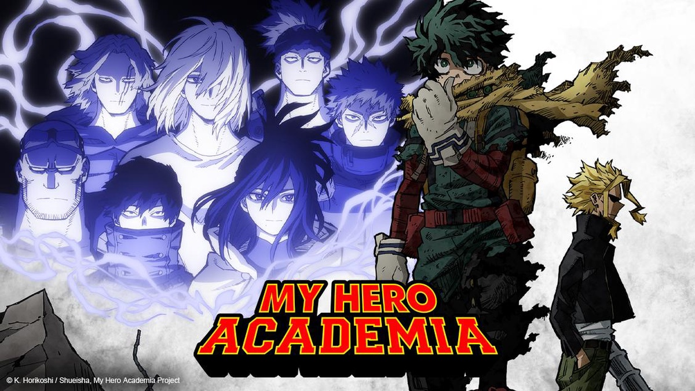
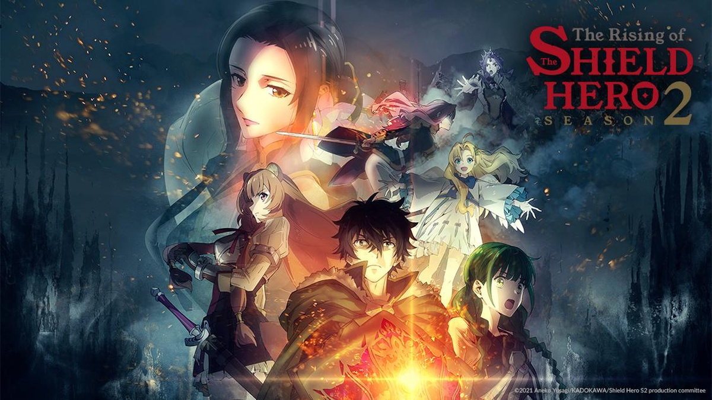
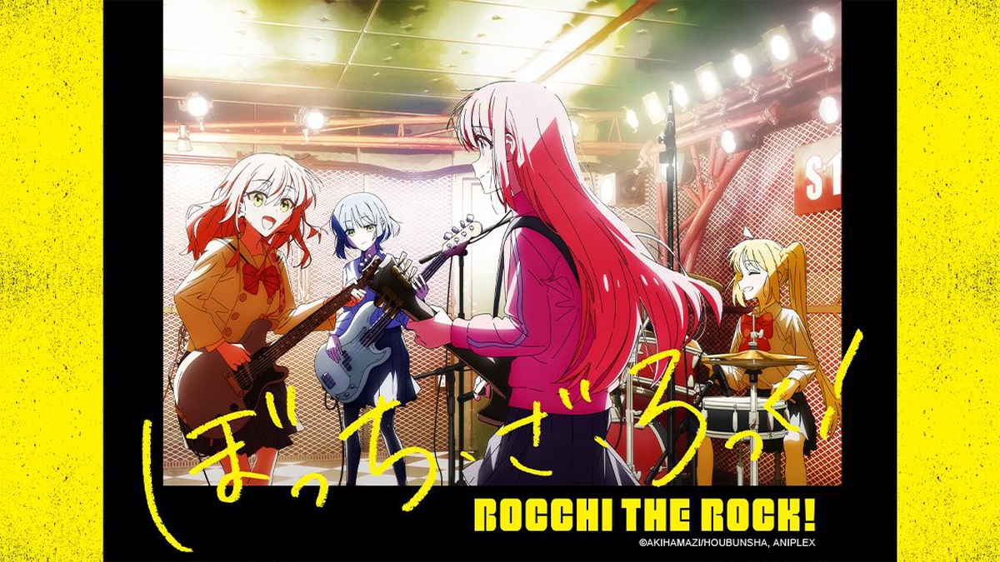

Géneros
Acción: El género de acción se enfoca en la emoción de la lucha y la aventura, con batallas épicas y escenas de acción emocionantes. Los personajes a menudo tienen habilidades sobrenaturales o utilizan armas y técnicas especiales para combatir a sus enemigos. El enfoque principal es en la lucha entre el bien y el mal, y los personajes principales a menudo enfrentan desafíos increíbles y superan obstáculos para alcanzar sus objetivos. Algunos ejemplos populares de anime de acción son "Naruto", "One Piece", "Attack on Titan", "My Hero Academia" y "Fullmetal Alchemist: Brotherhood".
Aventura: El género de aventura se enfoca en la exploración y la aventura, con los personajes viajando a nuevos lugares, descubriendo tesoros y superando obstáculos. El enfoque principal es en la exploración de mundos imaginarios o lugares reales, y los personajes a menudo enfrentan peligros y desafíos en el camino. A menudo se utiliza para contar historias emocionantes y llenas de acción. Algunos ejemplos populares de anime de aventura son "One Piece", "Hunter x Hunter", "JoJo's Bizarre Adventure", "Inuyasha" y "Magi: The Labyrinth of Magic".
Comedia: El género de comedia se enfoca en la diversión y el humor, y puede incluir una amplia variedad de subgéneros, desde la comedia romántica hasta la comedia absurda. A menudo se utiliza para aliviar la tensión en otros géneros, o para contar historias divertidas e interesantes por sí solas. Los personajes a menudo tienen personalidades exageradas o son caricaturas, y las situaciones en las que se encuentran pueden ser extremas o ridículas. Algunos ejemplos populares de anime de comedia son “One Punch Man”, ” The Devil is a Part-Timer!", "K-On!", "Gintama" y "Lucky Star".
Drama: El género de drama se enfoca en la exploración de temas emocionales y personales, como la amistad, el amor y el crecimiento personal. Los personajes a menudo enfrentan situaciones difíciles o trágicas, y la historia puede ser tanto realista como fantasiosa. El enfoque principal es en la exploración de las emociones y relaciones entre personajes, y a menudo se utiliza para contar historias emocionales y conmovedoras. Algunos ejemplos populares de anime de drama son "Your Lie in April", "Anohana: The Flower We Saw That Day", "Clannad", "Violet Evergarden" y "March Comes in Like a Lion".
Fantasía: El género de fantasía se enfoca en la presencia de elementos sobrenaturales, mágicos y fantásticos, con mundos imaginarios y criaturas míticas. Los personajes a menudo tienen habilidades o poderes sobrenaturales, y la historia puede incluir magia, dragones, elfos, vampiros y otros elementos mágicos y fantásticos. A menudo se utiliza para contar historias de aventuras emocionantes en mundos imaginarios. Algunos ejemplos populares de anime de fantasía son "Sword Art Online", "Fullmetal Alchemist: Brotherhood", "Re:Zero − Starting Life in Another World", "No Game No Life" y "The Rising of the Shield Hero".
Romance: El género de romance se enfoca en la relación entre los personajes principales, a menudo con una trama sentimental y emocional. Los personajes pueden enfrentar desafíos en su relación, como problemas de comunicación o conflictos de intereses. La trama a menudo incluye situaciones románticas y emocionales, como citas y confesiones de amor. El enfoque principal es en la exploración de las emociones y relaciones entre personajes, y a menudo se utiliza para contar historias emotivas y románticas. Algunos ejemplos populares de anime de romance son "Toradora!", "Kimi ni Todoke", "Clannad", "Your Lie in April" y "Kaguya-sama: Love is War".
Isekai: El género de isekai se caracteriza por el hecho de que el personaje principal es transportado a un mundo completamente diferente al que conoce, generalmente de fantasía. Algunos ejemplos populares de anime isekai son "Sword Art Online", "Re:Zero − Starting Life in Another World", "That Time I Got Reincarnated as a Slime", "Overlord" y "Konosuba: God's Blessing on This Wonderful World!".
Gore: El género gore se enfoca en la violencia extrema, el derramamiento de sangre y las imágenes explícitas. A menudo se utiliza para contar historias de terror, horror y acción intensa. El género puede incluir escenas gráficas y perturbadoras de violencia y gore, como decapitaciones, desmembramientos y tortura. A menudo es recomendado para un público adulto debido a su contenido explícito. Algunos ejemplos de anime gore son "Elfen Lied", "Tokyo Ghoul", "Attack on Titan", "Hellsing Ultimate" y "Blood-C".
Slice of life: Este género se enfoca en representar situaciones cotidianas y realistas de la vida diaria de los personajes, con un enfoque en las interacciones sociales y las emociones. A menudo, el género se utiliza para contar historias sobre la vida en una escuela, trabajo o en un ambiente familiar. Los personajes a menudo enfrentan desafíos comunes de la vida, como la amistad, el amor, el crecimiento personal y la lucha por alcanzar sus metas y sueños. El género se caracteriza por un ritmo tranquilo y relajado, y una atención detallada a la ambientación y los detalles de la vida diaria. Algunos ejemplos de anime de slice of life son “Bocchi the Rock!”, "K-On!", "Honey and Clover", "March Comes in Like a Lion" y "Barakamon".
Harem: El género harem se enfoca en un personaje masculino rodeado por varios personajes femeninos que están interesados en él de manera romántica o sexual. A menudo se utiliza para contar historias románticas, cómicas y emocionales. Los personajes femeninos a menudo tienen personalidades y rasgos distintos, y compiten por el afecto del personaje principal. A menudo es popular entre el público masculino joven, aunque también es disfrutado por personas de todas las edades y géneros. Algunos ejemplos populares de anime harem son "High School DxD", "The Quintessential Quintuplets", "Nisekoi", "To Love-Ru" y "Date A Live".
Mecha: El género mecha se enfoca en robots gigantes o máquinas controladas por humanos. A menudo se utiliza para contar historias de acción y ciencia ficción, y las batallas entre robots y otros enemigos son un tema común en el género. Los robots a menudo tienen habilidades especiales y armamento, y pueden ser pilotados por uno o más personajes principales. El género mecha es popular entre los fanáticos de la ciencia ficción, la tecnología y la acción. Algunos ejemplos de anime mecha son "Neon Genesis Evangelion", "Gundam Wing", "Code Geass", "Gurren Lagann" y "Darling in the FranXX".
Deportes: El género de deportes se enfoca en deportes y actividades atléticas, y a menudo se utiliza para contar historias de superación personal, competencia y trabajo en equipo. Los deportes más comunes en el anime incluyen el fútbol, el baloncesto, el béisbol, el tenis y el boxeo, entre otros. Los personajes a menudo tienen habilidades especiales y trabajan juntos para superar obstáculos y ganar competencias. El género de deportes es popular entre los fanáticos de los deportes y aquellos que buscan historias motivadoras. Algunos ejemplos de anime de deportes son "Haikyuu!!", "Kuroko no Basket", "Free!", "Blue Lock" y "Yowamushi Pedal".

Ecchi/Hentai: Estos dos géneros están relacionados con el contenido sexual en el anime. El género ecchi se enfoca en situaciones y humor sugerente, pero no incluye explícitamente contenido sexual. Por otro lado, el género hentai es más explícito y gráfico en términos de contenido sexual, y no está recomendado para menores de edad. Ambos géneros a menudo se utilizan en historias cómicas y románticas, y se centran en temas de amor, lujuria y relaciones sexuales. Es importante tener en cuenta que estos géneros pueden no ser adecuados para todos los espectadores y que pueden ser polémicos en algunos países y culturas. Algunos ejemplos de anime ecchi/hentai son "High School DxD", "Prison School", "KissxSis", "No Game No Life" y "Golden Boy".
Yuri: El género yuri se enfoca en relaciones románticas o sexuales entre mujeres. A menudo se utiliza para contar historias de amor y romance entre personajes femeninos, y se centra en temas como la amistad, el amor y la identidad de género. El género yuri es popular entre las mujeres y los fanáticos del romance y la diversidad sexual. Algunos ejemplos de anime yuri son "Yuru Yuri", "Sakura Trick", "Strawberry Panic", "Maria-sama ga Miteru" y "Citrus".
Yaoi: El género yaoi se enfoca en relaciones románticas o sexuales entre hombres. A menudo se utiliza para contar historias de amor y romance entre personajes masculinos, y se centra en temas como la amistad, el amor y la identidad de género. El género yaoi es popular entre las mujeres y los fanáticos del romance y la diversidad sexual. Algunos ejemplos de anime yaoi son "Gravitation", "Junjou Romantica", "Love Stage!!", "Banana Fish", "Given".